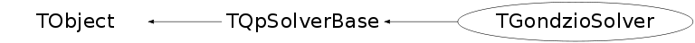

class TGondzioSolver: public TQpSolverBase
TGondzioSolver Derived class of TQpSolverBase implementing Gondzio-correction version of Mehrotra's original predictor-corrector algorithm.
Function Members (Methods)
public:
protected:
| virtual void | TObject::DoError(int level, const char* location, const char* fmt, va_list va) const |
| void | TObject::MakeZombie() |
Data Members
public:
| enum TObject::EStatusBits { | kCanDelete | |
| kMustCleanup | ||
| kObjInCanvas | ||
| kIsReferenced | ||
| kHasUUID | ||
| kCannotPick | ||
| kNoContextMenu | ||
| kInvalidObject | ||
| }; | ||
| enum TObject::[unnamed] { | kIsOnHeap | |
| kNotDeleted | ||
| kZombie | ||
| kBitMask | ||
| kSingleKey | ||
| kOverwrite | ||
| kWriteDelete | ||
| }; |
public:
| Int_t | TQpSolverBase::fIter | iteration counter |
protected:
| Double_t | fAcceptTol | |
| Double_t | TQpSolverBase::fArtol | |
| Double_t | fBeta_max | |
| Double_t | fBeta_min | |
| TQpResidual* | fCorrector_resid | storage for residual vectors |
| TQpVar* | fCorrector_step | storage for step vectors |
| Double_t | TQpSolverBase::fDnorm | norm of problem data |
| TQpProbBase* | fFactory | |
| Double_t | TQpSolverBase::fGamma_a | |
| Double_t | TQpSolverBase::fGamma_f | parameters associated with the step length heuristic |
| Int_t | fMaximum_correctors | maximum number of Gondzio corrector steps |
| Int_t | TQpSolverBase::fMaxit | maximum number of iterations allowed |
| Double_t* | TQpSolverBase::fMu_history | [fMaxit] history of values of mu obtained on all iterations to date |
| Double_t | TQpSolverBase::fMutol | termination parameters |
| Int_t | fNumberGondzioCorrections | actual number of Gondzio corrections needed |
| Double_t | TQpSolverBase::fPhi | merit function, defined as the sum of the complementarity gap |
| Double_t* | TQpSolverBase::fPhi_history | [fMaxit] history of values of phi obtained on all iterations to date |
| Double_t* | TQpSolverBase::fPhi_min_history | [fMaxit] the i-th entry of this array contains the minimum value of phi |
| Int_t | fPrintlevel | parameter in range [0,100] determines verbosity. (Higher value |
| Double_t* | TQpSolverBase::fRnorm_history | [fMaxit] history of values of residual norm obtained on all iterations to date |
| TQpVar* | fStep | |
| Double_t | fStepFactor0 | various parameters associated with Gondzio correction |
| Double_t | fStepFactor1 | |
| TQpLinSolverBase* | TQpSolverBase::fSys | |
| Double_t | fTsig | exponent in Mehrotra's centering parameter, which is usually |
Class Charts
{kind=link}
{kind=link}
{kind=link}
{kind=link}

Function documentation
Int_t Solve(TQpDataBase* prob, TQpVar* iterate, TQpResidual* resid)
Solve the quadratic programming problem as formulated through prob, store the final solution in iterate->fX . Monitor the residuals during the iterations through resid . The status is returned as defined in TQpSolverBase::ETerminationCode .
void DefMonitor(TQpDataBase* data, TQpVar* vars, TQpResidual* resids, Double_t alpha, Double_t sigma, Int_t i, Double_t mu, Int_t status_code, Int_t level)
Print information about the optimization process and monitor the convergence status of thye algorithm